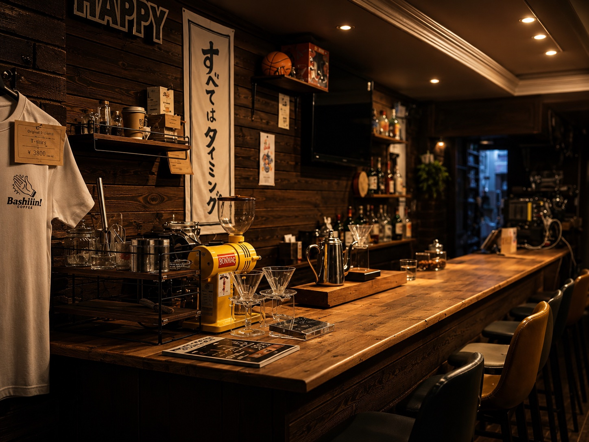
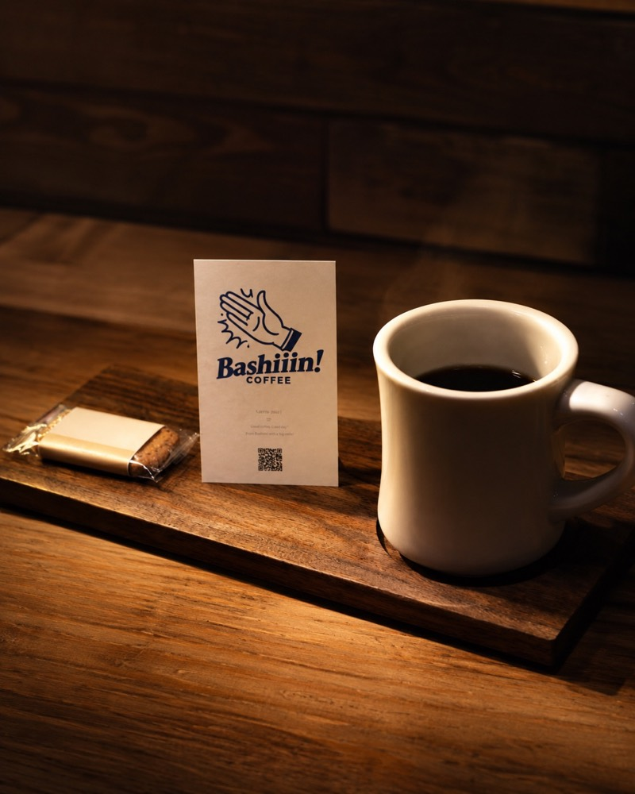
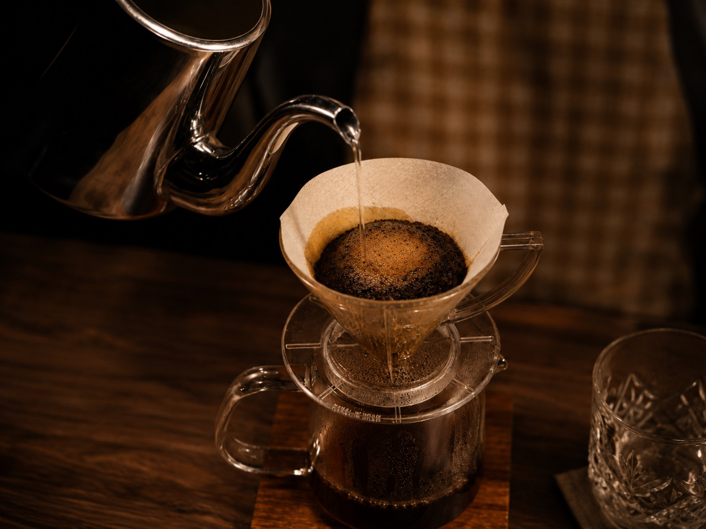
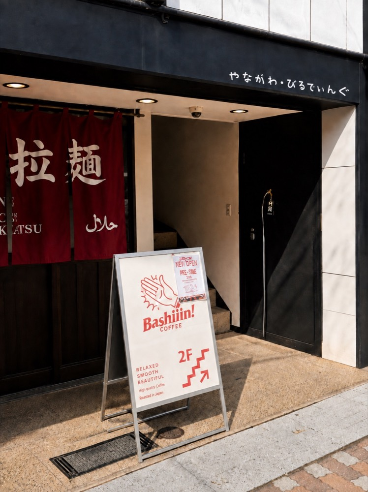
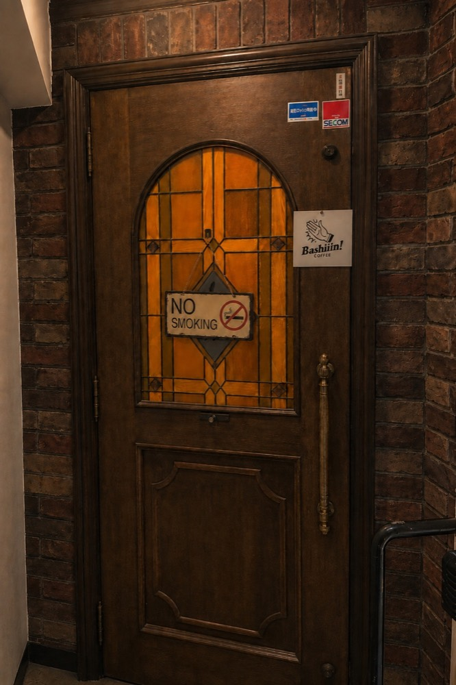
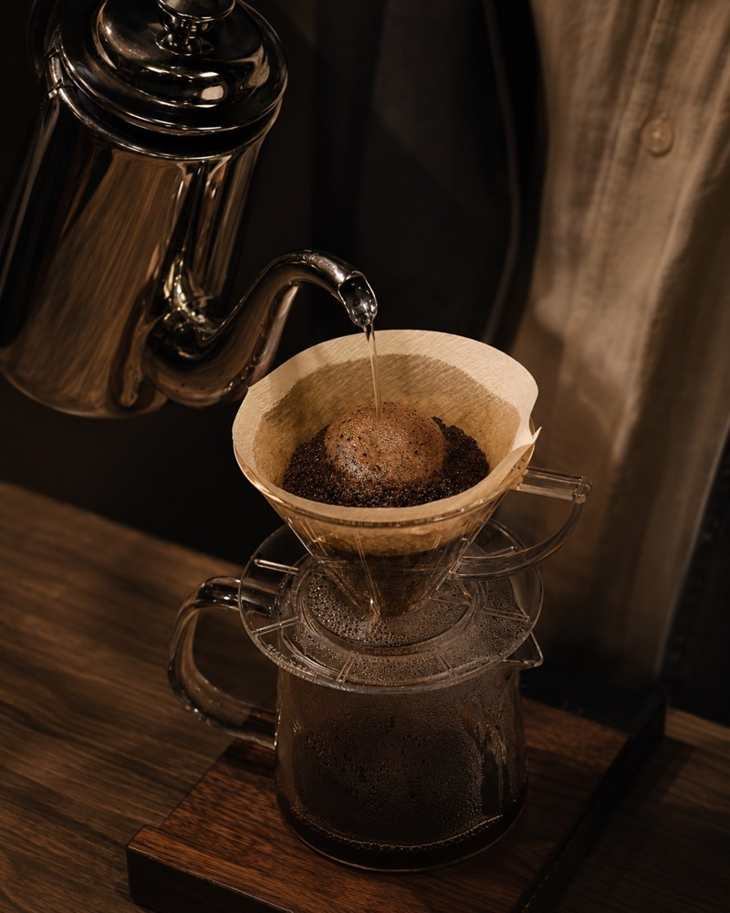

SPECIALTY COFFEE / KYOTO
丁寧に淹れた一杯を、四条河原町の少し奥で。
河原町の賑わいを少し抜けた、雑居ビル2階のコーヒースタンド。
一人でふらりと、丁寧に淹れたコーヒーとプリンをどうぞ。
※店舗確認前のコンセプトとして掲載しています。
LATEST INFO
ご来店の前に、今日の営業をチェック。
営業日と営業時間は、週ごとに変わります。
お出かけ前に、公式Instagramで最新情報をご確認ください。
Hours vary week to week.
Check our official Instagram for the latest updates.

ABOUT
ひとりの時間に、ちょうどいい。
四条河原町の賑わいから、ほんの少し奥へ。
扉を開けると、木のカウンターが迎えます。
一人で静かに過ごしたい日も、
コーヒーの話を聞いてみたい日も。
京都散策の合間に、自分のペースで
一杯を楽しめる場所です。
※店舗体験は店舗確認前のコンセプトです。

COFFEE / ROAST & BREW
豆の個性を、一杯の中へ。
焙煎から抽出まで、豆の持ち味と向き合い、
ご注文ごとに一杯ずつ丁寧に淹れます。
カウンター越しに眺める抽出の時間も、
コーヒーを味わう楽しみのひとつです。
その日の豆や提供内容は、Instagramでご案内します。
※焙煎・抽出の表現は店舗確認前のコンセプトです。
Instagramで豆やコーヒーを見るPUDDING
コーヒーの余韻に、やさしい甘さを。
一杯とゆっくり向き合う時間に、
プリンという小さな楽しみを添えて。
一杯と一緒に味わいたい、
Bashiiin! coffeeらしい組み合わせです。
当日の提供状況は、Instagramでご確認ください。
※提供内容は店舗確認前のコンセプトです。
Instagramでメニューを見るSPACE / CULTURE
一人で落ち着ける。話したくなれば、すぐ近くに。
目の前で進む抽出を眺めながら、
自分のペースでコーヒーを味わうカウンター。
豆や淹れ方が気になったときは、気軽にひとこと。
静かな時間と、店とのほどよい距離を楽しめます。
店の日常やカルチャーは、Instagramでも発信しています。
※店内の過ごし方は店舗確認前のコンセプトです。
Instagramで日常を見るACCESS / FIRST VISIT GUIDE
初めての方へ。入口から、2階まで。
少し見つけにくい場所だからこそ、
建物と入口の写真を目印にお越しください。
三丁目之町239-1 やながわビル 2F
※住所は店舗確認前の情報です。
Google Mapsで開く↗-

1 -

2

もっと見る ↗今日の営業を確かめたら、四条河原町の少し奥へ。
丁寧に淹れた一杯と、ゆっくり流れる時間を用意してお待ちしています。